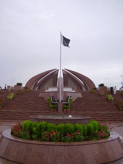

Independence Day (Yāum-e-Āzādi), observed annually on 14th August, is a national holiday in Pakistan.It was the day when Pakistan achieved independence and was declared a state following the end of the British Raj in sub-continent.
Pakistan was created with immense sacrifices
Pakistan got created by the sacrifices and hardwork of our great leaders (Quaid-E-Azam,Allama Iqbal ,Sir Syed Ahmed Khan,Liaqat Ali Khan,Muhtarma Fatima Ali Jinnah and many others).These all leaders sacrified their day in and day out to achieve a separate homeland for the Muslims of sub-continent. Firstly,they organized the people under the one platform which was of Muslim League.The people also obeied their leaders.When all the leaders and the Muslims were organied then they started the struggle in 1940and in the short time period of seven years Pakistan was achieved. It got created by the struggle of every person in Pakistan Movememt because a single person can do nothing if the people are united and organized than they can achieve a big cause.
The golden era in Pakistan's History started from 1960s.This was the era,when we were the pioneers of the developing world. PIA and other companies were training the big organizations like Emirates Airlines and the historic visit of President Ayub Khan to U.S.A is the biggest example of our glory at that time. Our agriculture sector was producing the biggest exports.Pakistan was exporting its goods to the entire world.We were called a developed country at that time.This all was because,we were the true Muslims at that time and we knew our ideology that why we got Pakistan.As Allama Iqbal said;
Paksitan is our beloved country.We love our country by
heart and soul but unfortunately,now our condition is not
good because we have forgotton our ideology for which
approxiamately fifty Lac people sacrificed
their lives because they realized that it is impossible for
the Muslims of sub-continent to live with Hindus and how can we
forget the famous statement of Quaid-E-Azam about Hindus that
"The Hindu is incorrigible"
Thank You!everyone for listening to
my presentation.